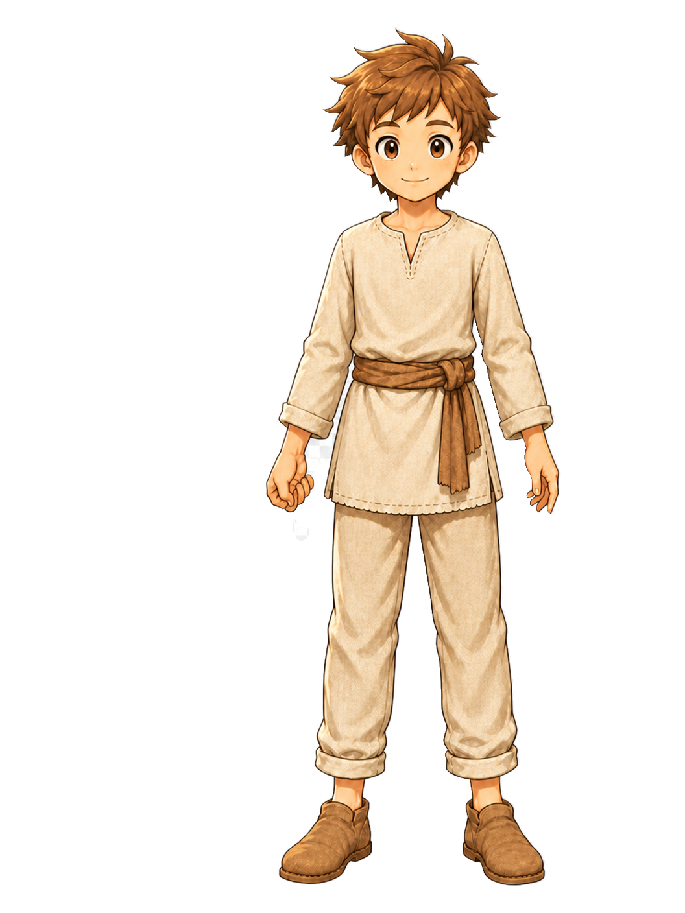
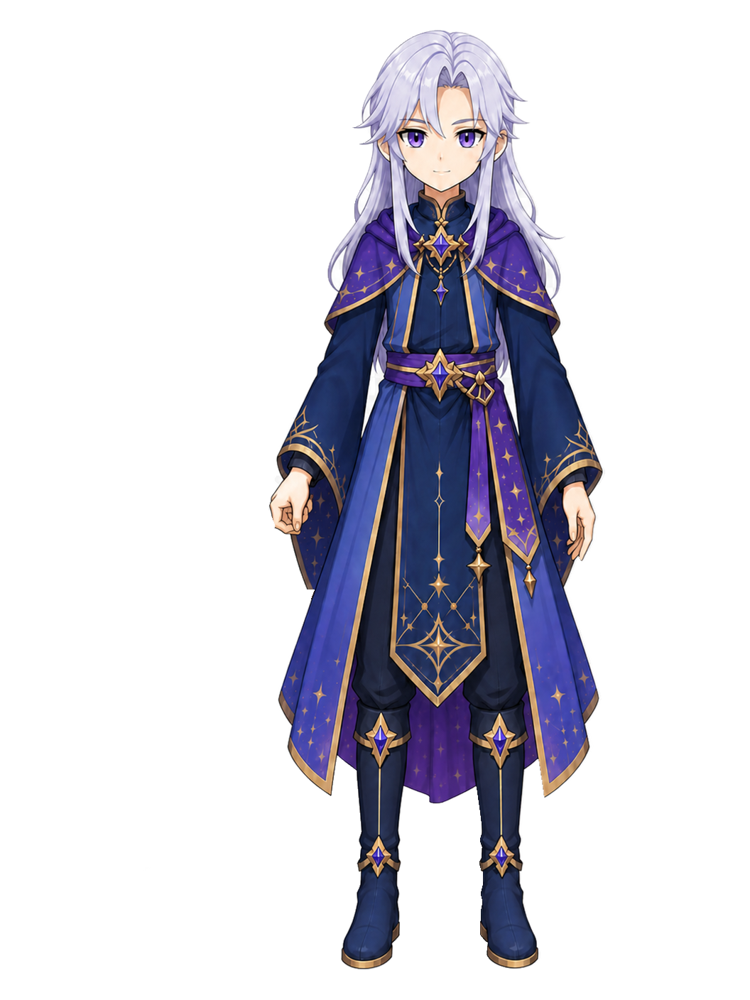
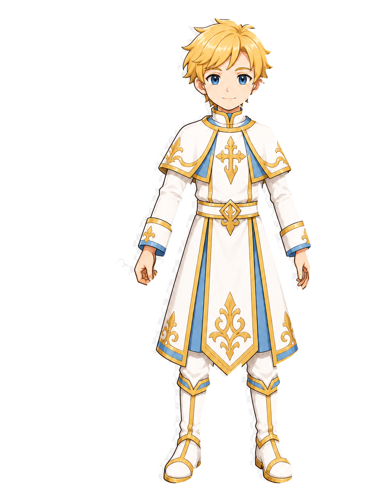
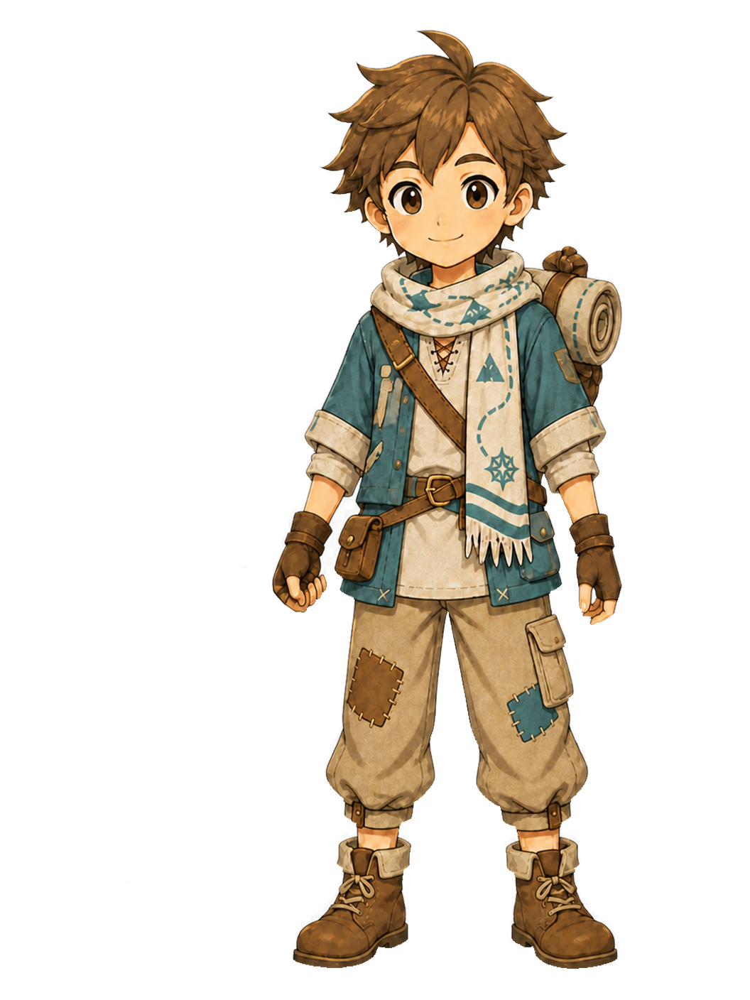
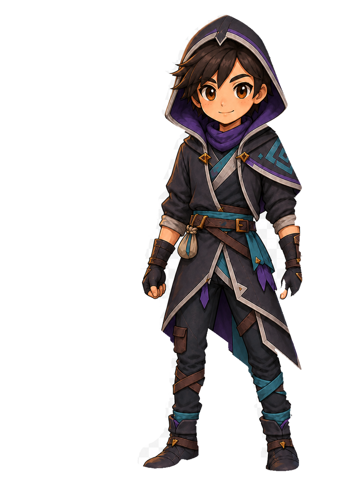
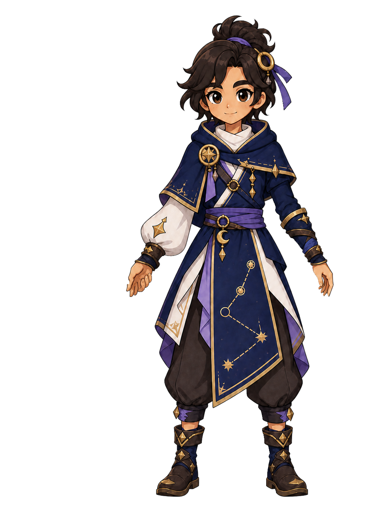

apprentice
BEFORE — approved source

AFTER — weapon-free derivative

Grip / hand crop — before
PENDING_OWNER_VISUAL_ACCEPTANCE
Each section compares the immutable Owner-approved source composite (baked generic sword) with its separate weapon-free runtime derivative. The derivative is a candidate for later overlay composition; this pack does not grant runtime approval and does not wire Hero presentation.










